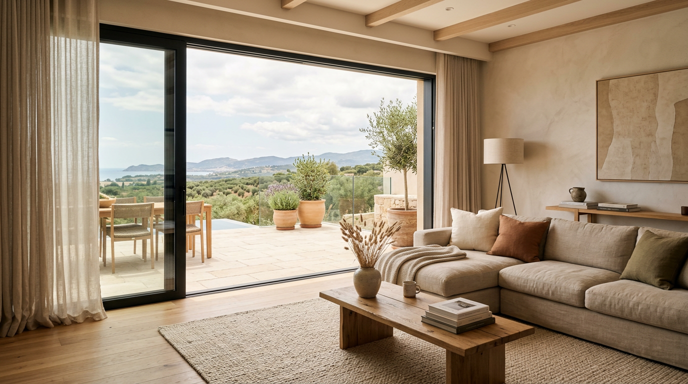
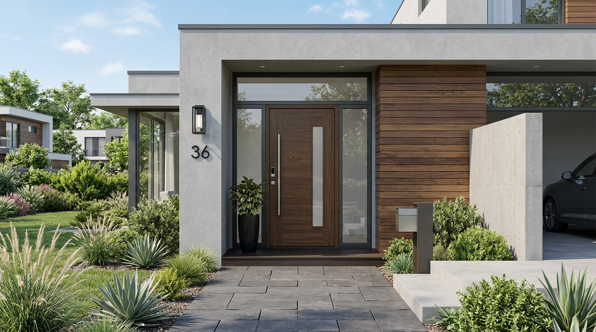
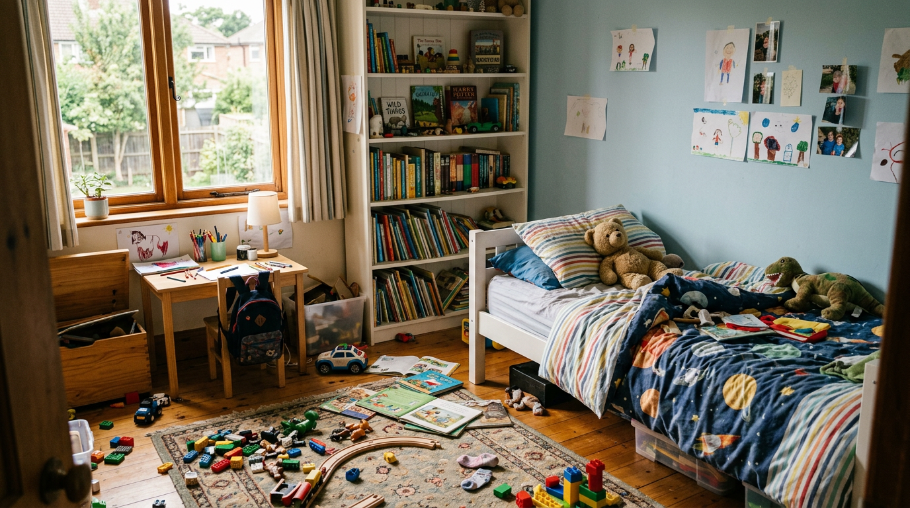

Сензори за прозорци
Компактни безжични сензори, които засичат отваряне и оставане отворено. Идеални за тераси, детски стаи и леснодостъпни прозорци.
Когато никой не е у дома...
Най-честите кражби стават през прозорците и входната врата. Ние комбинираме умни безжични сензори за прозорци и врати с мобилно приложение, което изпраща мигновени сигнали до телефона ти при всяко нежелано отваряне.
Когато семейството е на работа, на почивка или просто извън града, домът остава уязвим и най-често напълно „невидим“ за собствениците. Най-честите кражби се случват през прозорците и входната врата – точно когато няма кой да реагира навреме и няма реална информация какво се случва вътре.
Инсталираме интелигентни сензори на критичните точки – прозорци и входни врати. Те следят статуса им в реално време и при всяка промяна изпращат незабавно известие до телефона ти. Получаваш не просто аларма, а ясен сигнал кой отвор е засегнат, кога се е случило и колко дълго е останал отворен.
Aura Home Systems е завършено решение – от сензора на прозореца до известието на телефона.
Компактни безжични сензори, които засичат отваряне и оставане отворено. Идеални за тераси, детски стаи и леснодостъпни прозорци.
Устойчиви сензори за входни и гаражни врати, които предупреждават при всяко неочаквано отключване или отваряне.
Виждаш в реално време статуса на всеки сензор, получаваш известия и история на събитията – директно на телефона си.
Няколко реални сценария, в които системата работи за теб – дори когато ти не мислиш за нея.

Сензор на плъзгащата врата към терасата те предупреждава, ако остане отворена след вечеря или ако някой я отвори през нощта, докато семейството спи.

Сензор на входната врата отчита всяко отваряне, докато си на работа. При неочаквано отключване получаваш моментално известие на телефона си.

Сензор на прозореца в детската стая ти дава спокойствие, че прозорецът не остава отворен, когато децата играят вътре или когато навън е студено.
Нашите решения вече работят в реални домове и обекти. Бавно, но сигурно, разширяваме мрежата си и пазим все повече хора.
Доволни собственици на Aura Home Systems споделят как приложението и сензорите им промениха спокойствието у дома.
„Приложението е изключително лесно – виждам веднага кой прозорец или врата е отворена. През зимата веднъж забравихме да затворим терасата и известието дойде мигновено. Наистина спокойствие за цялото семейство.“
„Работя често на командировки и преди се притенявах за дома. Сега с Aura виждам статуса на всички входове в реално време. Приложението работи стабилно и известията са ясни – препоръчвам го с две ръце.“
„Инсталирахме сензори на детската и на входната врата. Приложението е много интуитивно – дори бабата си проверява дали всичко е затворено преди лягане. Добре дошли в 21 век, без да е сложно.“
Разкажи ни с какво жилище разполагаш и ще ти предложим конкретна конфигурация от сензори за врати и прозорци.